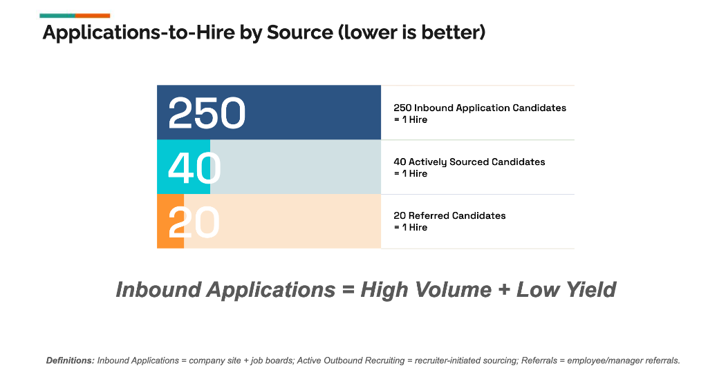

1. Source Quality Snapshot
A simplified view of how many candidates each channel needs to produce a hire (numbers illustrative but directionally accurate for tech & GTM roles).

| Source | Candidates per Hire | Signal |
|---|---|---|
| Inbound | ≈ 250 | Very high volume; low average signal. |
| Outbound / Sourced | ≈ 40 | Curated profiles, stronger alignment. |
| Referrals | ≈ 20 | Highest intent and cultural fit. |
2. How a TA Ops Leader Reads This
2.1 Inbound is noisy
Inbound can be tempting because it’s “free volume,” but each additional applicant tends to add almost no incremental signal.
- 250 resumes per hire is expensive in recruiter hours.
- Most inbound funnels hide extreme variance in quality.
- Low-signal noise = inconsistent decisions + fatigue.
2.2 Outbound has stronger alignment
Even though outbound takes more effort, you control who enters the pipeline.
- Higher ICP match.
- Higher likelihood of reaching final stages.
- Far less variability than inbound noise.
2.3 Referrals are the efficiency engine
Referrals usually convert fastest and take the least recruiter effort.
- Employees pre-filter for fit.
- HMs trust referrals more.
- Shorter time-to-hire due to built-in credibility.
3. Strategic Implications
3.1 Rebalance recruiter time
- Reduce time spent manually triaging inbound.
- Automate inbound with Screening A[i]gent.
- Shift recruiter hours toward targeted outbound.
3.2 Spend where it matters
- Cut low-performing job boards.
- Invest in referral programs; they convert.
- Upgrade sourcing tools for targeted outreach.
3.3 Leadership messaging
4. Metrics A[i]gent Integration
Metrics A[i]gent provides ongoing monitoring of source efficiency, including:
- Candidates per hire by source.
- Pass-through by stage (screen, interview, offer).
- Time-to-hire by source type.
- Cost-per-hire vs recruiter time-per-hire.
These insights power quarterly decisions on budget allocation, recruiter specialization, and whether to scale or retire sources.
5. Recommended Actions
- Establish baselines. Run a 6–12 month lookback by role family.
- Set quarterly targets. e.g., “40% of hires from referrals + outbound.”
- Automate inbound. Use Screening A[i]gent to remove triage overhead.
- Invest in high-signal channels. Referral enablement, sourcing tools.
- Review quarterly. Watch source mix and conversion improve.
This small snapshot is a powerful example of your larger philosophy: measure what matters, optimize what converts, automate what doesn’t add value.